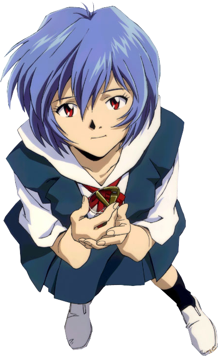

malas membuat web

Rei Ayanami is a fictional character from the popular anime and manga series "Neon Genesis Evangelion." Created by Hideaki Anno, "Neon Genesis Evangelion" is a critically acclaimed and influential mecha anime series that originally aired in 1995-1996. Rei Ayanami is one of the main characters in the series. Rei is a mysterious and enigmatic character. She is a pilot of one of the giant mechs (Evangelions) used to combat mysterious beings known as Angels that threaten humanity. Rei is known for her pale complexion, blue hair, and red eyes. She is often depicted as emotionless and aloof, and her origins and purpose are shrouded in mystery throughout much of the series. Rei Ayanami's character plays a significant role in the complex and philosophical storyline of "Neon Genesis Evangelion," and her character has been the subject of much analysis and interpretation by fans and scholars due to the series' deep and symbolic themes.